Referenciák
Referenciák — házak és épületek, amikben már élnek és dolgoznak
Válogatás az elmúlt évek terveiből. Válasszon kategóriát a fülekkel — a „kép" jelzésű projektek kattintva galériával nyílnak.

Merész formák lejtős telken
Veresegyház · Családi ház
Lejtős telekre tervezett, dinamikus tömegformálású modern családi ház — a szintkülönbséget a belső terek javára fordítva.

Minimalista életérzés
Budapest, Buda · Családi ház
Letisztult, minimalista családi ház nagy üvegfelületekkel, a budai domboldal panorámájára komponálva.
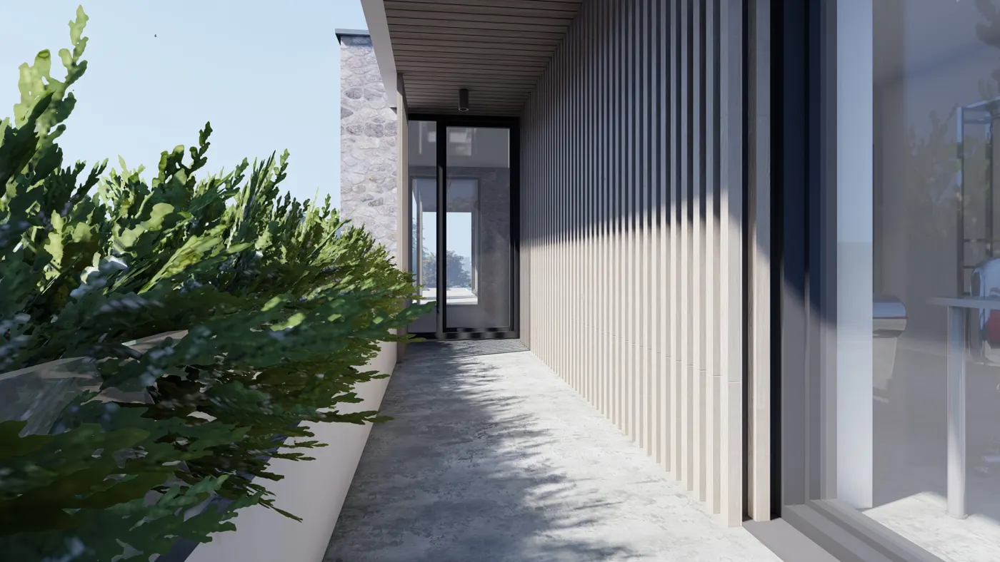
7 képModern környezetben
Pomáz · Családi ház
Kortárs, egyszerű geometriájú családi ház, amely finoman illeszkedik a pomázi domboldal beépítéséhez.

Full minimal
Budapest · Családi ház
Radikálisan letisztult, „full minimal” formavilágú városi családi ház, ahol minden felület a lényegre koncentrál.
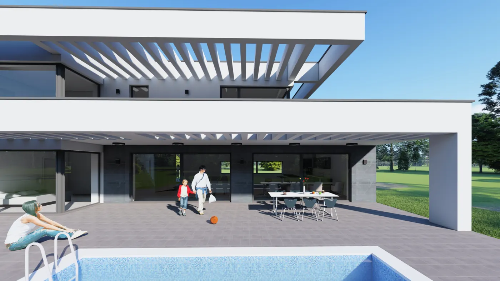
4 képModern családi ház
Diósd · Családi ház
Diósdi domboldalra tervezett modern családi ház, kilátásra és benapozásra optimalizált tájolással.
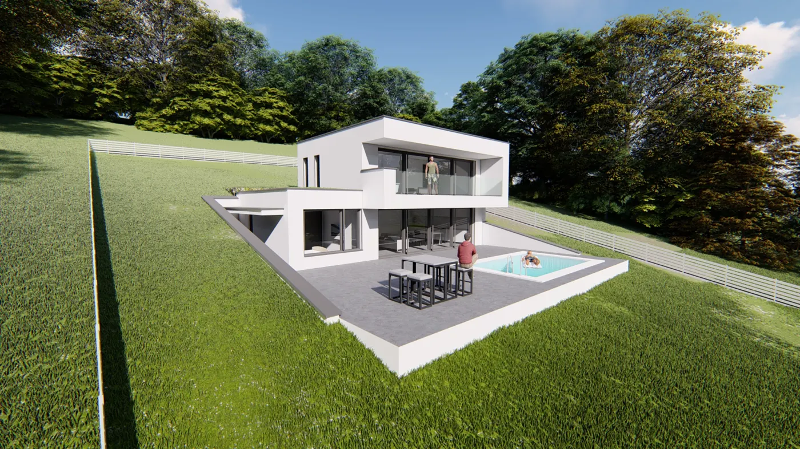
4 képCsaládi ház a Duna-kanyarban
Szentendre · Családi ház
Szentendrei családi ház, amely a Duna-kanyar természeti környezetéhez és a helyi karakterhez illeszkedik.
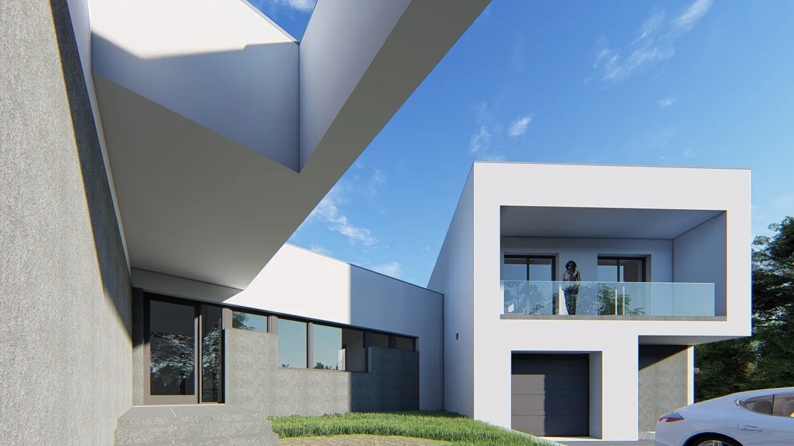
4 képLake Forest villa
Mogyoród · Családi ház
Erdőszéli, tavas környezetbe komponált modern villa nagyvonalú nappali terekkel és kültéri kapcsolattal.
 6 kép
6 kép
Modern családi ház
Mogyoród · Családi ház
Fiatal családnak tervezett, energiatudatos modern családi ház Mogyoródon, letisztult tömeggel és nagy üvegfelületekkel.
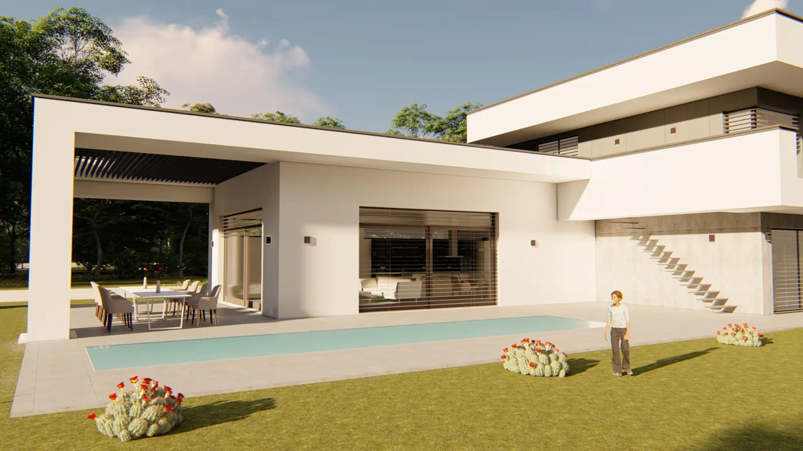
4 képCsaládi ház kerttel
Mogyoród · Családi ház
Kertkapcsolatra épülő, tágas nappali–étkező–konyha egységet kínáló mogyoródi családi ház.
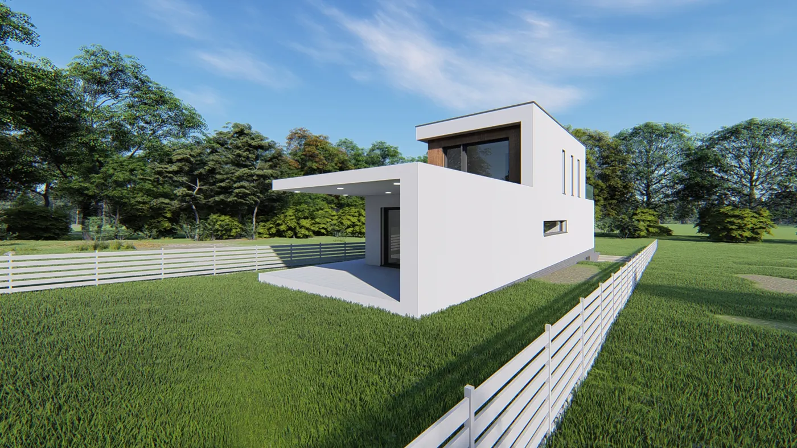
4 képLetisztult családi otthon
Mogyoród · Családi ház
Egyszerű tömegű, minimalista részletképzésű családi ház a mogyoródi új beépítésben.
 6 kép
6 kép
Modern családi ház
Csömör · Családi ház
Csömöri családi ház, amely a nyugodt kertvárosi környezethez igazodó, visszafogott modern építészetet képvisel — tágas terekkel és igényes anyaghasználattal.
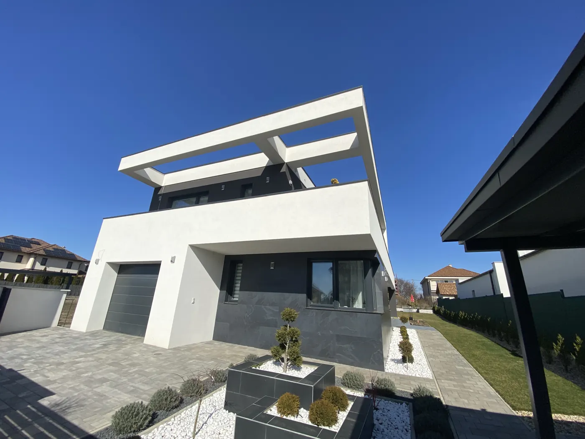
4 képCsaládi ház a kertvárosban
Csömör · Családi ház
Praktikus alaprajzú, jól benapozott családi ház Csömör csendes utcájában.
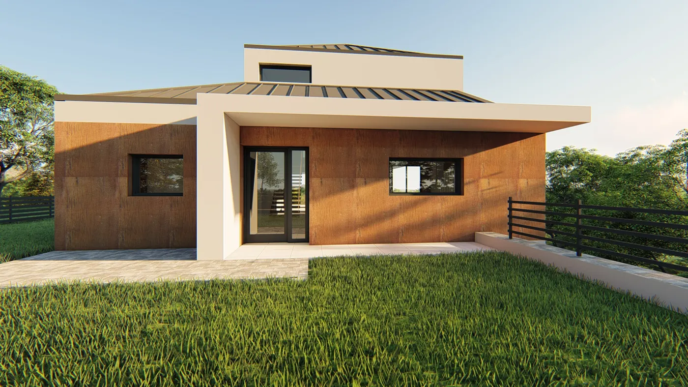
4 képModern családi ház
Szada · Családi ház
Szadai domboldalra tervezett modern családi ház a Gödöllői-dombság panorámájával.
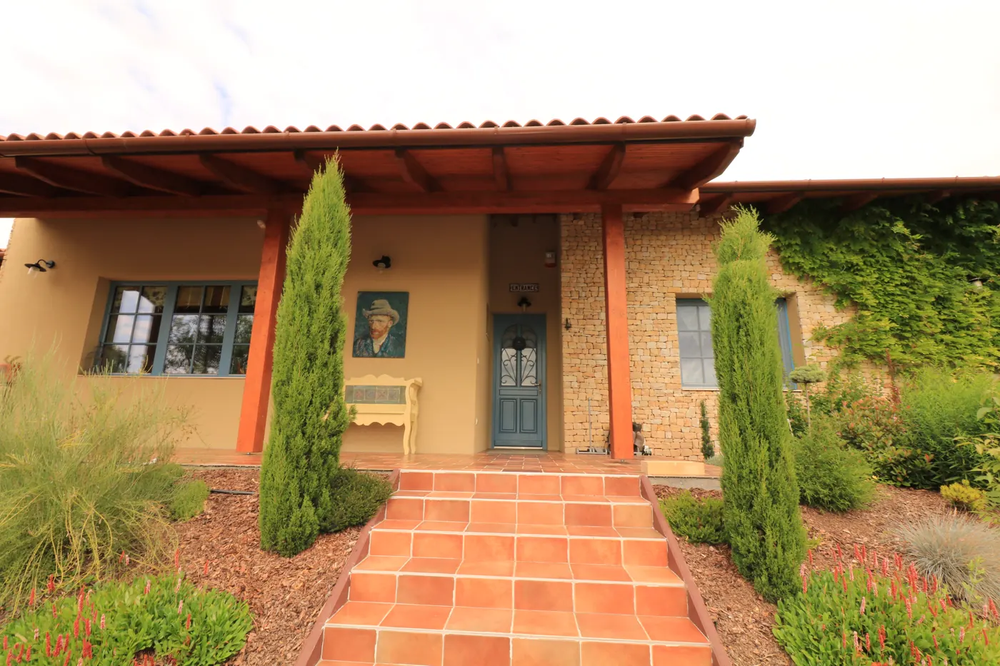
19 képFlóra Farm — mediterrán családi ház
Őrbottyán · Családi ház
Mediterrán, provence-i hangulatú vidéki családi ház Őrbottyánban — kőburkolatos és meleg vakolt homlokzattal, cseréptetővel, árkádos terasszal és levendulakerttel.
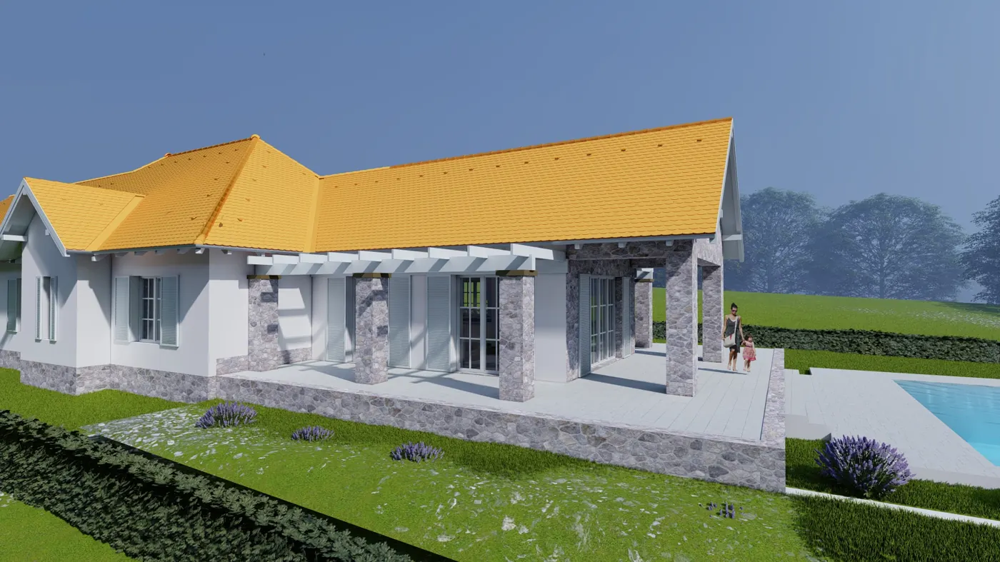
4 képModern családi ház
Veresegyház · Családi ház
Veresegyházi családi ház letisztult tömeggel, gazdaságos, energiatudatos szerkezettel.
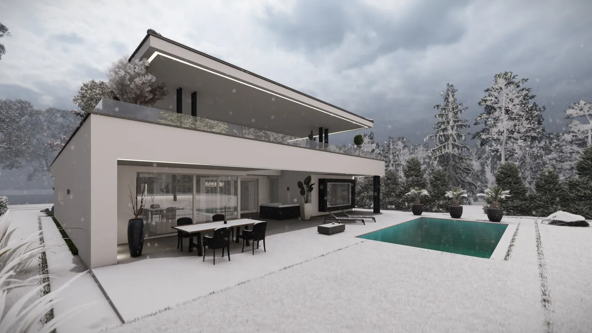
4 képCsaládi otthon kerttel
Veresegyház · Családi ház
Kertkapcsolatra tervezett veresegyházi családi ház, tágas közösségi terekkel.
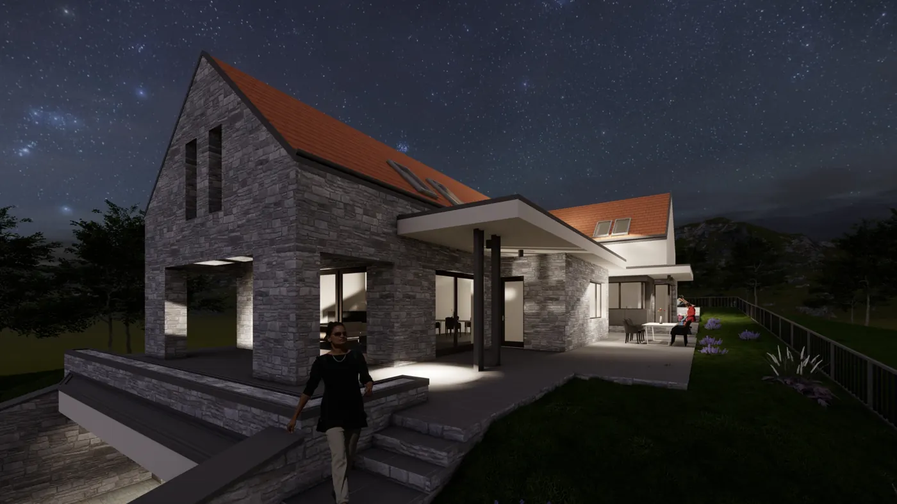
4 képMinimalista családi ház
Veresegyház · Családi ház
Minimalista, nagy üvegfelületű családi ház a veresegyházi új lakóterületen.
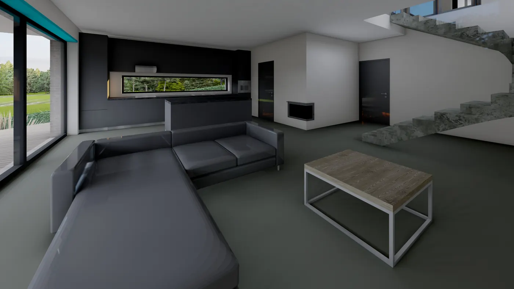
4 képDinamikus formájú családi ház
Veresegyház · Családi ház
Fiatalos, dinamikus tömegű családi ház Veresegyházon, okos alaprajzi elrendezéssel.
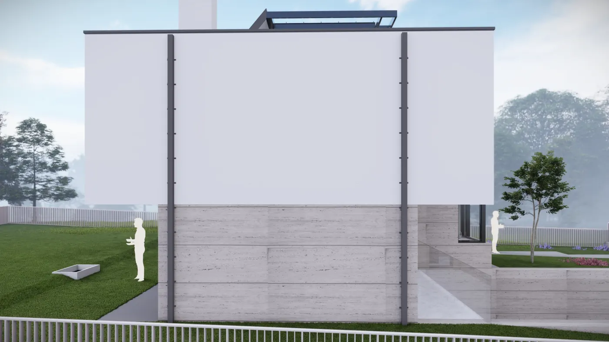
4 képVárosi családi ház
Budapest, II. kerület · Családi ház
Budai, II. kerületi domboldalra tervezett prémium családi ház, kilátásra komponált teraszrendszerrel.
 6 kép
6 kép
Modern családi ház
Budapest, XVIII. kerület · Családi ház
Pesti kertvárosi telekre tervezett modern családi ház, letisztult formavilággal, kompakt és gazdaságos szerkezettel.
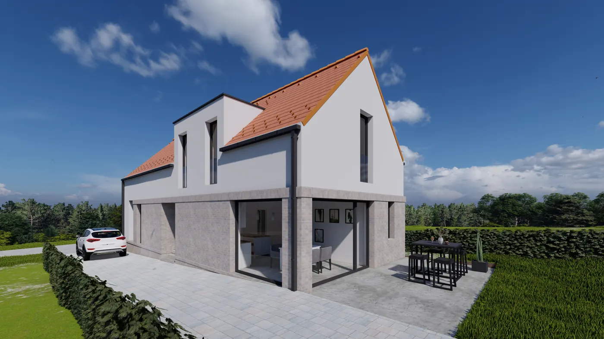
4 képCsaládi ház a Duna-parton
Dunakeszi · Családi ház
Dunakeszi Duna-parti telkére tervezett családi ház, a folyóra nyíló nappalival.
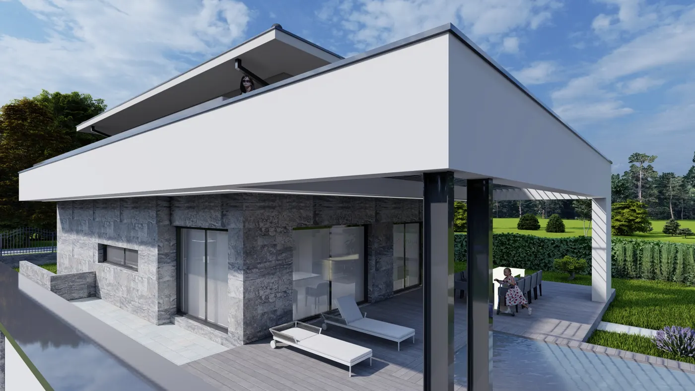
4 képModern családi ház
Dunakeszi · Családi ház
Dunakeszi Fóti úti telekre tervezett, letisztult formavilágú családi ház.
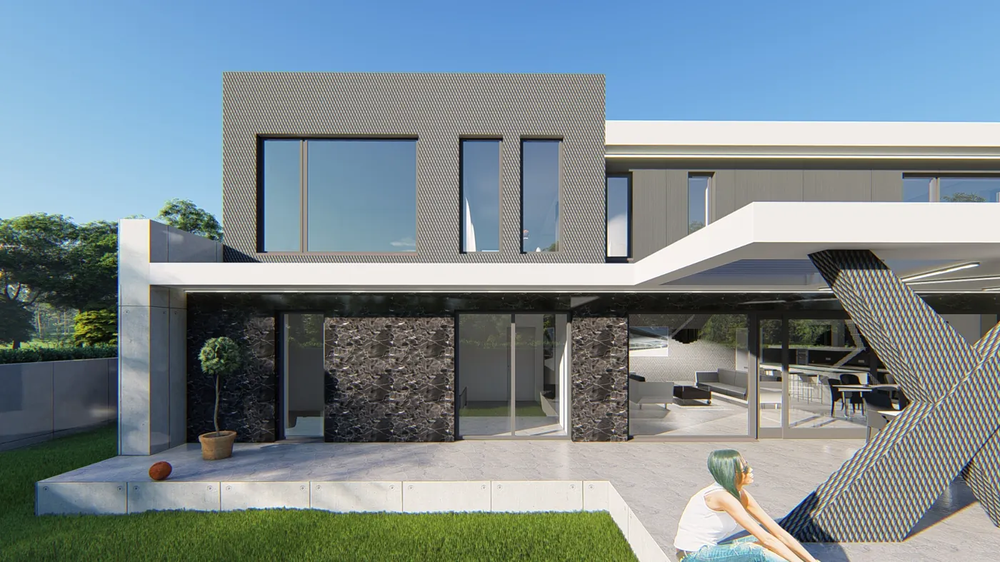
4 képCsaládi ház az Alföldön
Soltvadkert · Családi ház
Soltvadkerti, tágas telekre tervezett modern földszintes családi ház.


{kind=link}
{kind=link}
Tetszik, amit lát?
Tervezzük meg együtt a következőt — az Ön telkére, életére vagy vállalkozására szabva.